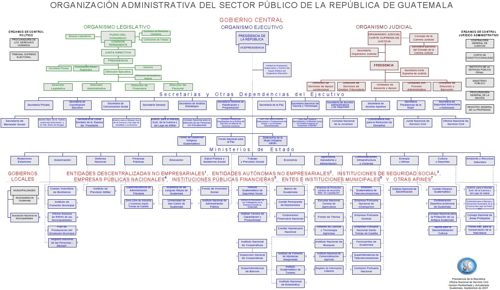
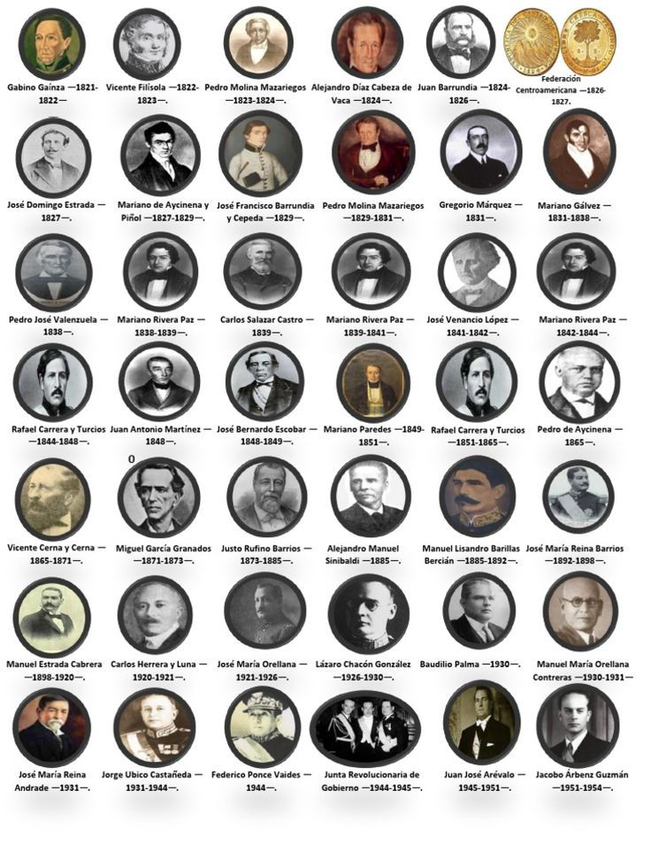

La Historia de Guatemala
Civilización Maya Antigua (2000 a.C. - 1500s)
- Se desarrolló en Mesoamérica; en Guatemala, las ciudades se concentraron en Petén.
Colonización Española (1500s-1821)
- España conquistó la región y explotó a la población indígena mediante sistemas laborales.
- Se expandió el catolicismo y Antigua Guatemala fue un centro colonial clave.
Independencia e Inestabilidad Temprana (1821-finales de 1800s)
- Guatemala se independizó en 1821 y se unió brevemente al Imperio Mexicano y luego a la Federación Centroamericana.
- Hubo inestabilidad política y luchas de poder entre los nuevos estados.
Influencia Estadounidense y Golpe de Estado de 1954
- Empresas como United Fruit dominaron la economía guatemalteca.
- Estados Unidos respaldó el golpe contra Jacobo Árbenz por sus reformas agrarias.
Guerra Civil (1960-1996)
- Conflicto entre el gobierno y grupos de izquierda durante 36 años.
- Murieron más de 200,000 personas, muchas indígenas mayas.
Guatemala Moderna (1996-presente)
- Se firmaron acuerdos de paz y se estableció una república democrática.
- Persisten problemas como pobreza y corrupción, pero la cultura indígena sigue siendo central.
La Política de Guatemala
Antes de 1821 (Regla Maya Española)
- El poder colonial se centralizaba en Antigua Guatemala bajo control español.
- Los indígenas estaban subordinados a la élite criolla que dominaba la tierra y el gobierno.
Independencia y principos de la República
- En 1821, Guatemala se independizó y se unió a la República Federal de Centroamérica.
- Hubo conflictos entre liberales y conservadores; destacaron Arce, Morazán, Gálvez y Carrera.
Finales del siglo XIX - Principios del XX
- Incluye la reforma liberal, gobiernos de transición y la dictadura de Estrada Cabrera.
Reforma Liberal (1871-1898)
- Se implementó educación secular y creció la economía cafetalera.
- Se expropiaron tierras indígenas, fortaleciendo a la élite terrateniente.
Gobiernos de Transición (1885-1898)
- Continuó la modernización con inestabilidad económica y política.
- El asesinato de Reina Barrios llevó a un gobierno autoritario.
Dictadura de Estrada Cabrera (1898-1920)
- Régimen autoritario con censura y control centralizado.
- Se fortaleció la influencia de Estados Unidos en la economía.
1940s-1950s (Demócrata “Diez Años de Primavera”)
- Tras la caída de Ubico, se impulsaron reformas sociales bajo Arévalo y Árbenz.
- La reforma agraria afectó intereses estadounidenses y llevó al golpe de 1954.
Golpe de Estado de 1954 al Gobierno Militar
- Se instauró un régimen militar que reprimió la oposición.
- Inició un período de gobiernos militares que condujo a la guerra civil en 1960.
El Gobierno de Guatemala

Los Líderes de Guatemala
Era Moderna (1986–Presente)
-
Bernardo Arévalo (2024–present)
Alejandro Giammattei (2020–2024)
Jimmy Morales (2016–2020)
Alejandro Maldonado (2015–2016)
Otto Pérez Molina (2012–2015)
Álvaro Colom (2008–2012)
Óscar Berger (2004–2008)
Alfonso Portillo (2000–2004)
Álvaro Arzú (1996–2000)
Ramiro de León Carpio (1993–1996)
Jorge Serrano Elías (1991–1993)
Vinicio Cerezo (1986–1991)
Gobiernos Militares y de Transición (1954–1986)
-
Óscar Humberto Mejía Víctores (1983–1986)
Efraín Ríos Montt (1982–1983)
Ángel Aníbal Guevara (1982)
Romeo Lucas García (1978–1982)
Kjell Eugenio Laugerud García (1974–1978)
Carlos Arana Osorio (1970–1974)
Julio César Méndez Montenegro (1966–1970)
Enrique Peralta Azurdia (1963–1966)
Miguel Ydígoras Fuentes (1958–1963)
Carlos Castillo Armas (1954–1957)
Otras

El Sistema y La Ley
Guatemala opera bajo la Constitución de Guatemala, que sirve como base para su sistema de gobierno, leyes y regulaciones. Esta constitución establece a Guatemala como una república democrática, garantizando derechos fundamentales como la libertad de expresión, religión y debido proceso, al tiempo que esboza la estructura y los poderes de los poderes ejecutivo, legislativo y judicial. Incluye disposiciones sobre elecciones, límites de mandatos y responsabilidades de los funcionarios públicos, así como protecciones para las comunidades indígenas y la soberanía nacional. Además de la Constitución, el sistema legal de Guatemala está respaldado por códigos civiles, penales y comerciales, arraigados en el derecho civil español, que proporcionan reglas detalladas para la gobernanza cotidiana, los negocios y la justicia, formando el marco más amplio que guía cómo se crean, interpretan y hacen cumplir las leyes.